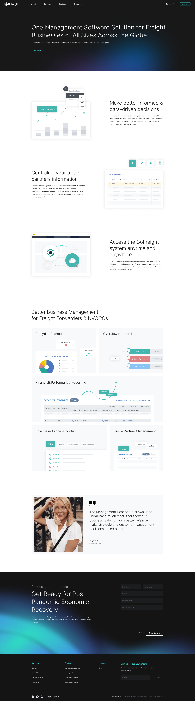
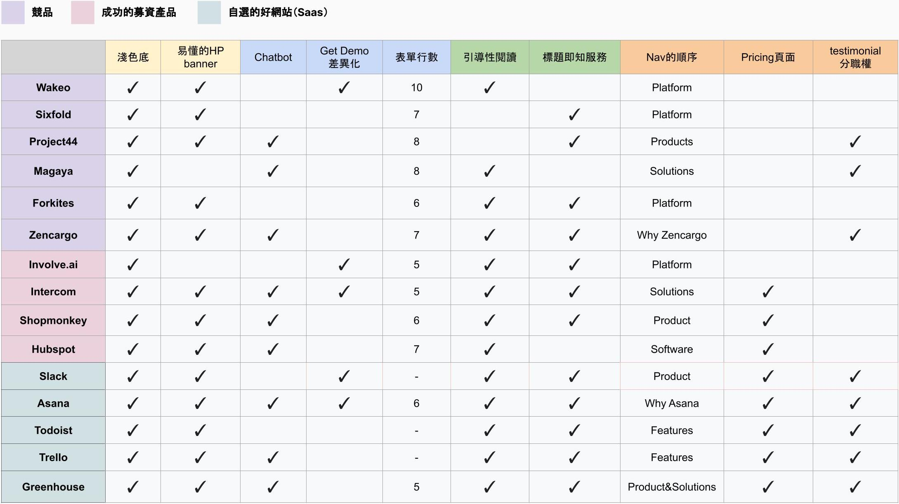
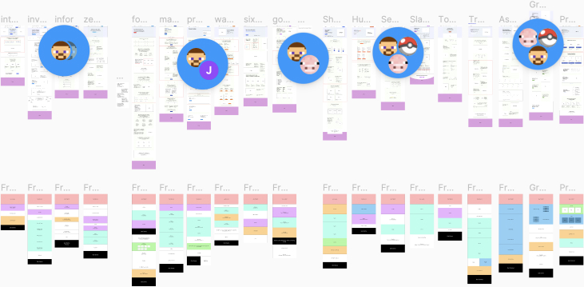

在新版本GoFreight官網更新中負責部分為圖片製作以及部分頁面layout，上線後為達到更好的網站成效持續執行網站調研與測試。 此案例將會分享排版設計、插圖以及對官網功能的調研結果。
◼ 404 Page
設計上主要目標為避免因錯誤原因來到404頁面的使用者得到差勁的體驗。在畫面上採模擬水中的影片做背景，加上與使用者對話的文案，希望用詼諧的方式讓使用者願意導向首頁繼續瀏覽網站。
◼ Solution - Managed Business Page
◼ Blog首頁
主要目標：視覺與新官網統一、增加使用者在網站停留時間。
舊版Blog獨立，需要回到官網才能繼續閱讀產品相關資訊頁面，可能導致從Blog文章進入官網的使用者在看完文章就離開網站。
新版layout能和其他頁面共用上方選單，方便觀看完文章後還能引導至產品資訊頁面。
◼ Blog內頁
主要目標：改善閱讀體驗
最大更動為調整定義文字區塊寬度，使用者能更輕易的觀看下一行文字。
首先我們替網站建立了幾個指標，接著從其他競品、B2B產品網站進行分析。從視覺（包含設計與排版）、功能、內容、資訊架構四個層面切入。 整理條列出認為可以優化或新增的功能，再以此為參考調查其他To B網站。
調研之B2B網站比較圖如下：
拆解、結構化其他To B網站找出共通點，定義Gofreight網站的目的性。
調研之結果如下圖：
減少使用者在首頁的停留時間，快速取得他們所需的資訊。
多一個第二層級的CTA按鈕，讓使用者對其他CTA不感興趣或動機不強時增加機會與使用者互動。
豐富網站內容，提供資訊不同來源給不同受眾。
◼ 給予使用者找齊需要的資訊入口
◼ 目標讓使用者在首頁停留時間減少：使其快速到達想去的頁面，最終目標為增加在官網的總停留時間
◼ 針對不同使用者提供不同面向的入口（引導式閱讀）
◼ 找出能讓TA產生信賴感的編排方式（顏色、排版）
◼ 調整字之間層級的關係
◼ 首頁使用方法轉向橋樑（或入口），引導不同身份使用者到其感興趣的頁面
◼ 以調研為基礎重新規劃網站資訊架構與資訊區塊排列方式，並進行A/B Test